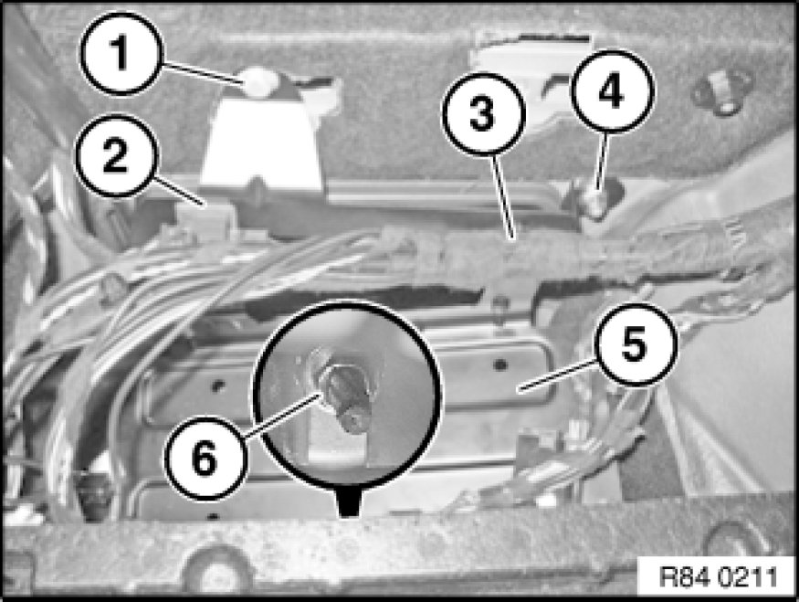
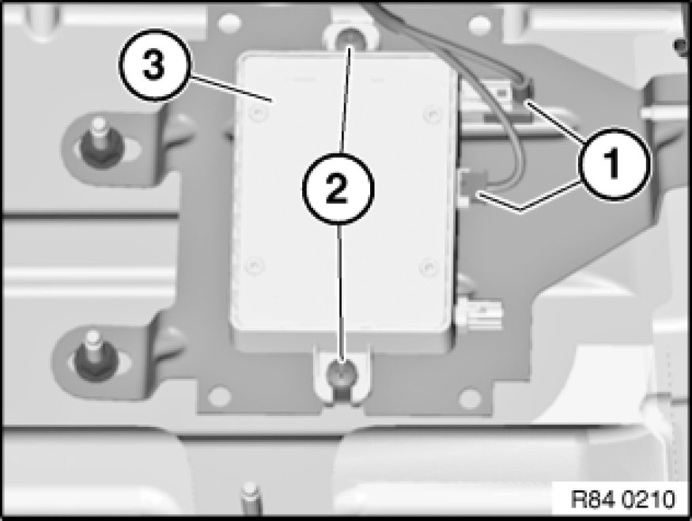

Removing and Installing/Replacing Compensator
84 21 522 - Removing and installing/replacing line compensator

Important!
Read and comply with notes on protection Programming and Relearning against electrostatic damage (ESD protection).

Necessary preliminary tasks:
- Remove hands-free charging electronics Service and Repair

Turn retaining clip (2) in clockwise direction and remove from holder (5).
Release wiring harness fastener (3).
Release bolt (1) and nut (4).
Slacken nut (6) and remove holder (5).

Disconnect plug connection (1).
Release screws (2).
Remove line compensator (3).